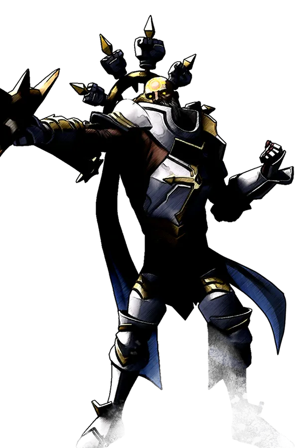

Matryoshka Arena
No farming: you log in already geared. Build your fighter in the Forge, paste the code into chat and go fight. Here your build, your hands and your head decide.
In the server list — [RU] Arena Matryoshka
From login to fight — three minutes
What is in the starter kit
- 17 T08 weapon types — three artifacts (Cloud Dancers, The Thousand Storms, The Endbringers) and legendaries of every type.
- Dracula's T09 armor — four sets: Scholar, Rogue, Warrior, Brute.
- 6 amulets — one per school of magic, the Phantom cloak, a bag.
- Coatings for all 6 schools and 8 elixirs — infinite.
Lost your items? Type .kit — the kit is given again.
The Forge — fighter editor
Everything that takes hours to assemble in the game takes a minute here. The website knows nothing about the server: it only packs your choices into one line for chat.
One line — the whole fighter
Spells with jewels, ultimate, 5 passives, 8 weapons with stats, blood, armor set, a coating on every weapon and an elixir. The mod puts weapons into slots in your order.
Mistake-proof
You can't pick more than three artifacts; a weapon gets exactly three stats, a jewel — up to four. The Forge tells you if something is empty or doesn't add up.
V Arena codes work
Have a build from V Arena? Paste its code (78 characters) — the mod converts it into its own build and tells you what it understood. Check the result: it's a foreign format.
Blood works for real
The mod gives real blood buffs at quality thresholds 0/30/60/90 and the fifth effect at 100%. You can mix two bloods — one stat is taken from the second.
Nothing falls off
Passives are checked every 2 seconds and restored if the game removed them. A drunk elixir is refilled after a reset and after death. Coatings are infinite.
Reset and forms
A reset (.r, the forms wheel or death) clears buffs and the coating cooldown. Beast forms switch on instantly, and you are invulnerable in beast form.
Where to fight
Free fight open
PvP in the arena is always on. Teleport points: 1 — arena, 2 and afk. For a warm-up — four training dummies with 25,000 health.
Castle raid arena beta
Two statues — attackers and defenders. Sign up and the mod sorts players into clans, moves them to the castle, gives buffs, potions and siege items to the attackers. Match time — 10 to 30 minutes; the defender's servants are placed from a set made in the Forge.
The match is still being polished: rough edges are possible.
1v1 duels soon
A fight to one death in a shrinking circle, rating (start 1000, +25 for a win, −20 for a loss) and a leaderboard. Switched off for now — we'll turn them on with an announcement in Discord.
Arena commands
Typed into the game chat, starting with a dot. Start typing — the list filters itself.
Gear and build
.build [code]also .bd.import <V Arena code>also .va, .import-build.kitalso .set.legendary <weapon> <infusion> <stats>also .l · .l ? — help.artifact <artifact> <stats>also .art · .art ? — help.jewel <spell> <stats>also .j · .j <spell> ? — list of stats.blood <blood> [second] [quality] [effect]also .b.bloodpotion <blood> [quality] [amount]also .bp.resetalso .rRaids and duels
.raid join attack|defendor just walk up to a statue.raid invite <player> <plot> <minutes> <shard>.raid accept / .raid decline.raid time <min>.raid loc .servants [8-character code]also .set-servants.gg.duel <name> | accept | deny | ffalso .d · soon.topsoon.statsalso .st · soonUseful
.tp <point>.tp list — list of points.pingalso .pRules in short
Fair play
Cheats, macros and bug abuse — ban. Found a bug? Open a ticket in Discord, it's appreciated.
Respect
Argue about the game, not the person. No insults, harassment, spam or ads for other servers.
Penalties
Warning → mute → ban. Cheats and leaking other people's data — instant ban. Disputes with the admins — in a ticket.